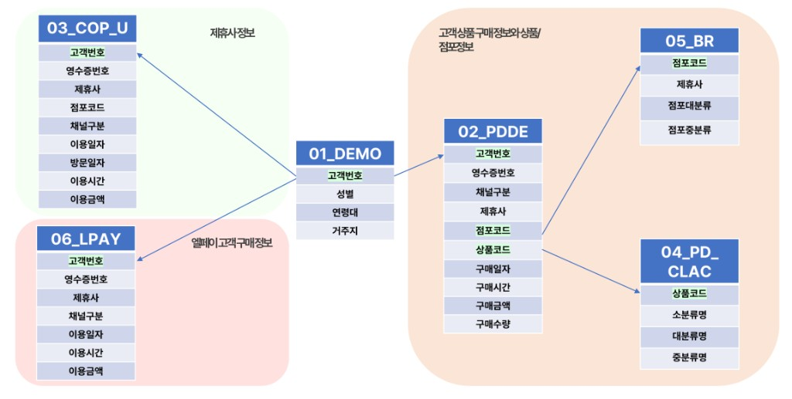
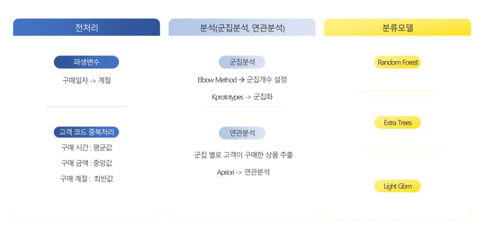
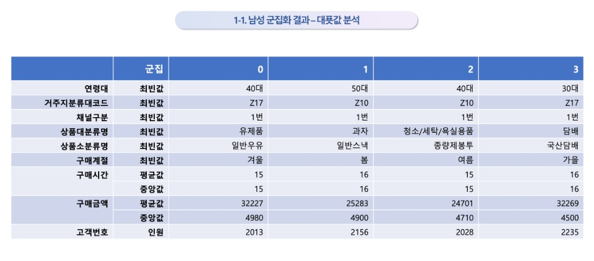
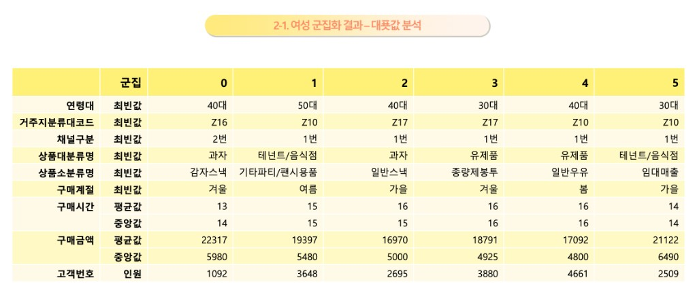
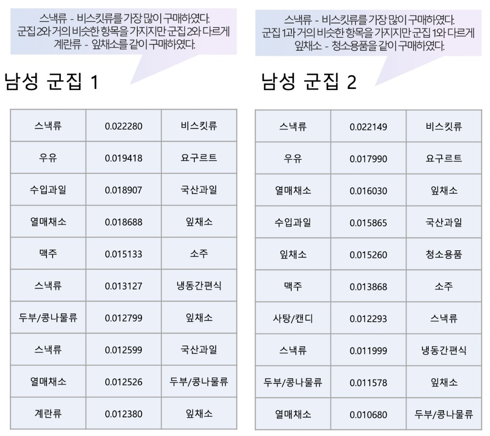
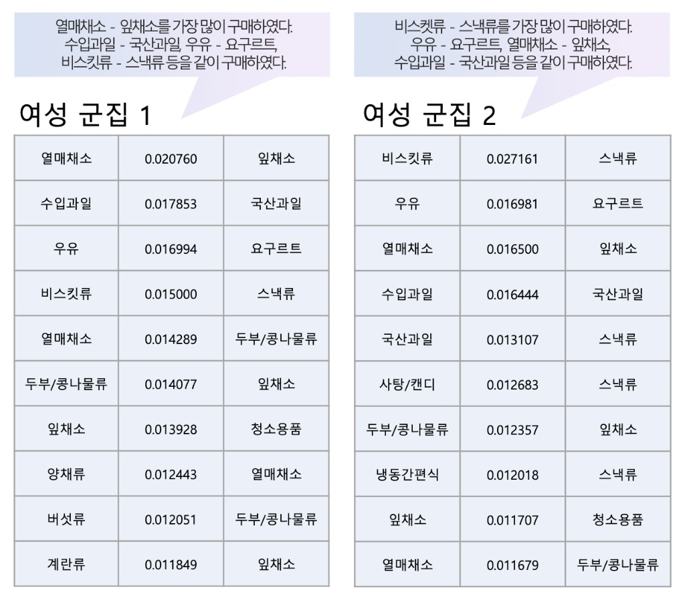

LPAY 고객 구매 데이터를 기반으로 고객 군집을 분류하고, 군집별 맞춤 마케팅 전략을 제안한 데이터 분석 프로젝트입니다.
K-Prototypes 기반 군집화와 연관 규칙 분석을 결합하여 신규 LPAY 고객에게도 군집 예측이 가능한 파이프라인을 설계했습니다.
군집별 연관 규칙 분석을 통해 묶음 상품 추천, 시간대별 혜택 등 구체적인 맞춤 서비스 전략을 도출했습니다.
주관: 롯데멤버스 / 인공지능팩토리
팀 구성: 데이터 분석 팀 프로젝트
역할: 데이터 전처리, 군집화, 연관 규칙 분석
기술 스택
Python, SQLite3, K-Prototypes, Apriori
PythonSQLite3K-PrototypesApriori
분석 배경 및 방향
문제 인식
LPAY 사용자가 여성과 40대에 편중
사용자층 균등화 및 수익 증대 필요
분석 방향
구매 데이터 기반 고객 군집 분류
LPAY 고객 군집별 분류 수행
시간대·계절별 맞춤 서비스 제공
담당 역할
데이터 전처리:
Python·SQLite3로 Star Schema 구조 DB 제작(6개 테이블: 고객 인구통계, 상품 구매내역, 제휴사 이용, 상품분류, 점포정보, 엘페이 이용내역),
구매일자 → 구매계절 파생변수 생성,
고객코드 기준 대푯값 그룹핑(채널·구매시간: 평균, 구매금액: 중앙값, 구매계절·상품: 최빈값)
군집화 (K-Prototypes):
수치형·명목형 혼재 데이터에 K-Prototypes 적용, Min-Max Scaling, Elbow Method로 최적 군집 수 결정,
성별 분리 군집화(남성 4개 군집, 여성 6개 군집)
연관 규칙 분석 (Apriori):
고객별 구매 내역을 트랜잭션 단위로 변환, 상품 대·중·소분류 세 단위로 각각 분석,
군집별 독립 연관 규칙 분석, min_support를 군집별 데이터 크기에 맞게 조정,
Support 기준 Top 10 규칙 추출 및 마케팅 전략 도출
Star Schema 구축 예시
전처리 단계에서 Python·SQLite3로 설계한 6개 테이블 구조를 도식화한 예시입니다.
01_DEMO(고객 인구통계)를 중심으로 02_PDDE 상품 구매,
03_COP_U 제휴사 이용, 06_LPAY 엘페이 이용 내역이 고객번호로 연결되고,
구매 사실은 05_BR 점포·04_PD_CLAC 상품 분류 마스터와 조인되도록 구성했습니다.

LPAY(엘포인트) 고객 세그멘테이션 분석용 DB 설계 예시
분석 프로세스
원천 데이터를 전처리해 분석 가능한 단위로 만든 뒤, 군집·연관 분석으로 패턴을 도출하고,
필요 시 분류 모델로 신규 고객 등에 대한 군집 예측·확장을 염두에 둔 흐름을 정리했습니다.
아래 도표는 프로젝트에서 사용·검토한 단계를 요약한 것입니다.

전처리 → 군집·연관 분석 → 분류 모델 단계 요약
군집 분석 결과
남성·여성 군집별 대표값(최빈값·평균·중앙값·인원) 요약 표입니다. 좌우로 스와이프하거나 아래 버튼으로 넘겨 보실 수 있습니다.

1-1. 남성 군집화 결과 — 대표값 분석

2-1. 여성 군집화 결과 — 대표값 분석
남성 군집 (4개)
군집 0: 유제품 구매층
40대, 겨울 구매 多, 일반우유 중심
군집 1: 과자·주류 구매층
40~50대, 봄 구매 多, 일반스낵·소주
군집 2: 생필품 구매층
청소/세탁/욕실용품, 종량제봉투
군집 3: 담배·주류 구매층
30대, 국산담배·수입맥주 선호
여성 군집 (6개)
군집 0: 온라인 과자 구매층
40대, 온라인 이용, 감자스낵·상품권
군집 1: 외식·문구 구매층
50대, 테넌트/음식점, 팬시용품
군집 2: 간식 구매층
가을 구매 多, 일반스낵·군것질
군집 3: 유제품·생필품층
30대, 겨울 구매 多, 종량제봉투
군집 4: 유제품 저녁 구매층
40대, 저녁 구매 多, 일반우유·생필품
군집 5: 임대매출 외식층
30대, 임대매출 비중 높음, 한식
연관 분석 결과 예시
군집별로 Apriori 연관 규칙을 산출하고, Support 기준 상위 규칙을 바탕으로 군집 해석과 묶음 추천 아이디어를 정리했습니다.
아래는 성별 각각에서 대표 군집 2개(남성 군집 1·2, 여성 군집 1·2)의 Top 10 규칙을 한 장에 모은 예시입니다.

남성 군집 1·2 — 연관 규칙 (Support Top 10)

여성 군집 1·2 — 연관 규칙 (Support Top 10)
핵심 성과
고객 세그멘테이션 완성: 남성 4개 + 여성 6개, 총 10개 군집으로 LPAY 고객 전체 분류 파이프라인 구축
LPAY 신규 고객 대응 방안: 기존 고객은 구매 데이터 기반 자동 분류, 신규 고객은 설문 기반 군집 분류 수행 제안
군집별 마케팅 전략: 연관 규칙 결과 기반 묶음 상품 추천, 시간대별 혜택, 계절 할인 전략 수립
기술적 도전과 해결
1. 수치형·명목형 혼재 데이터 군집화 문제
문제: 구매시간·구매금액(수치형)과 연령대·채널구분·구매계절·상품대분류명(명목형)이 혼재하여 일반 K-Means 적용 불가
해결: K-Means(수치형)와 K-Modes(명목형)를 결합한 K-Prototypes 적용, 수치형 유클리드 거리와 명목형 불일치 비율을 γ 파라미터로 가중 결합
결과: 수치·명목 변수를 동시에 반영한 군집화 완성, 성별 분리 군집화로 소수 집단(남성) 특성까지 유효하게 도출
2. 연관 규칙 분석을 위한 트랜잭션 데이터 구성 문제
문제: 원본이 고객별·상품별 행 단위라 Apriori용 트랜잭션 형태 변환이 필요. 같은 날 구매 상품을 함께 구매로 간주하는 기준을 코드로 구현해야 함
해결: 고객번호 기준 정렬 후 동일 고객의 연속 행을 하나의 트랜잭션으로 묶는 로직 구현, 고객번호 변경 시점에서 트랜잭션 ID 순차 부여, TransactionEncoder로 Apriori 입력 형태 가공
결과: 고객별 구매 내역의 트랜잭션 단위 변환 완료, 군집별 독립 트랜잭션 데이터셋으로 연관 규칙 파이프라인 완성
한계 및 개선 방향
분석 학습 초기에 진행한 프로젝트로, 지금 돌아보면 아쉬운 점이 있습니다.
Lift > 1 필터링 미적용으로 우연에 의한 규칙이 포함됐을 가능성이 있고,
min_support 임계값을 데이터 분포 기반이 아닌 실험적으로 조정한 점,
트랜잭션 구성 시 고객번호 연속성 기반 로직을 사용했으나 groupby 방식이 더 안정적이었을 것입니다.